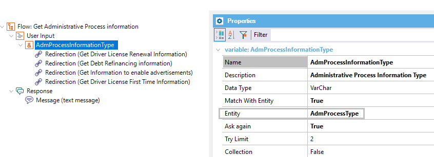
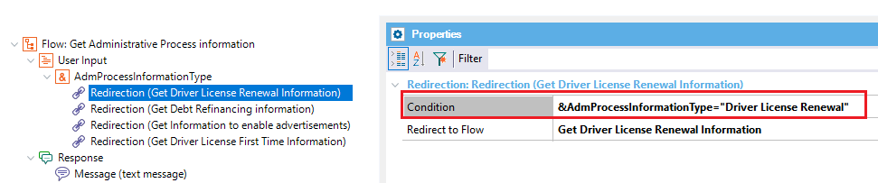

Condition to evaluate in order to do a redirection. Scope Objects: Conversational Flows Instance Description
This property is availble for the Chatbot User Input Redirections nodes. The condition must evaluate to TRUE in order to the redirection to be executed. The flow to be redirected is determined by the Redirect to Flow property. The condition should be an expression based on a context variable. Note: Only for Watson, you could also use code to be directly evaluated by the Provider, for example:
In this case, you specify that the input has to match any value (or a synonymous) of the entity.
In this case, you specify that the input has to match a specific value of the entity (or a synonymous). Consider the casing for the values. For example, if the value is "Debt Refinancing", the condition can be: @AdmProcessType:(Debt Refinancing) Samples
In the following example, the "AdmProcessInformationType" User input has the match With Entity property set to an entity of the model. Then, it adds four conditions, and they all depend on some entity value. In this case, it's the "Driver License Renewal" value.  If none of the conditions matched, the user would receive the response message. Notes: 1. It's important to respect the case sensitivity of the value defined in the Provider. In this case it's "Driver License Renewal" with these uppercase letters. 2. The user can enter the same value of the Entity, or any synonymous of it ("Driver Licence Renewal"). However, the Chatbot User Input variable will take the Value of the entity instead ("Driver License Renewal"). When this property evaluates to TRUE; the flow indicated in the Redirect to Flow property is executed. AvailabilityThis property is available since GeneXus 16 upgrade 5. |
| Backlinks | ||
| Chatbot Flow: Get information about any formality | Chatbot User Input Redirections | Toc:Chatbots in GeneXus |
| Redirect to Flow property |